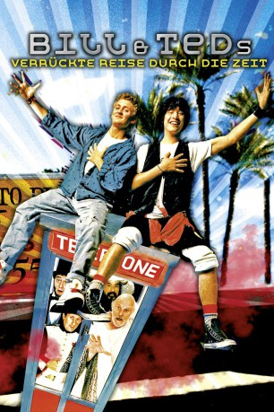
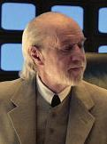

#5168 Bill & Teds verrückte Reise durch die Zeit
Alternativ: Bill & Ted's Excellent Adventure
 
 IMDB-Wertung: 6.9 / 10
IMDB-Wertung: 6.9 / 10  Metascore: 0
Metascore: 0 
Bunt ist das Dasein, und granatenstark! Bill und Ted werden von der Schule fliegen, wenn sie mit ihrem Abschlussreferat in Geschichte keine gute Note machen, was wohl ziemlich uncool wäre. Ein Kerl der sich selbst Rufus nennt, kommt mit einer Telefonzelle aus der Zukunft um ihnen bei dem scheinbar unlösbaren Problem zu helfen, denn das Schicksal der beiden hat einen entscheidenden Einfluss auf die Zukunft der ganzen Menschheit. Da Bücher viel zu trocken sind, reisen sie kurzerhand selbst in die Vergangenheit, um die großen Persönlichkeiten, die sie bei ihre Prüfung vorstellen müssen, persönlich kennenzulernen.
Jahr: 1989
Dauer: 86 Minuten
FSK: 6
Land: USA Studio: Orion PicturesTonspuren: DD2.0 - ,
Untertitel:
Auflösung: 1080p (1920x816) Größe: 6727 MB
Genre: Sci-Fi, Musik, Komödie, Abenteuer
Regisseur: Stephen Herek
Drehbuch: Damien Chazelle
Soundtrack:
Darsteller:
 Keanu Reeves als Ted 'Theodore' Logan
Keanu Reeves als Ted 'Theodore' Logan- Alex Winter als Bill S. Preston
-  George Carlin als Rufus
- Terry Camilleri als Napoleon
- Dan Shor als Billy the Kid
 Al Leong als Genghis Khan
Al Leong als Genghis Khan- Jane Wiedlin als Joan of Arc
- Clifford David als Beethoven
- Hal Landon Jr. als Captain Logan
 Bernie Casey als Mr. Ryan
Bernie Casey als Mr. Ryan- Amy Stoch als Missy / Mom
- J. Patrick McNamara als Mr. Preston
- Diane Franklin als Princess Joanna
- Kimberley Kates als Princess Elizabeth
 Jim Cody Williams als Bearded Cowboy
Jim Cody Williams als Bearded Cowboy- Marjean Holden als Student Speaker
- Claudia Templeton als Aerobic Saleswoman
- Ed Solomon als Stupid Waiter
- Tom Dugan als Neanderthal #2
- Clarence Clemons als The Three Most Important People in the World , uncredited
- Greg Lutz als Deputy , uncredited
- Golan Ramraz als Kid at Waterslides , uncredited
- Tony Steedman als Socrates
- Rod Loomis als Freud
- Robert V. Barron als Abraham Lincoln
- Frazier Bain als Deacon
- William Robbins als Ox Robbins
- Steve Shepherd als Randolf
- Anne Machette als Buffy
- Traci Dawn Davis als Jody
- Duncan McLeod als Bartender
- John Clure als Tattooed Cowboy
- Dusty O'Dee als Old West Ugly Dude
- Heather Pittman als Kerry
- Ruth Pittman als Daphne
- Richard Alexander als Bowling Alley Manager
- James Bowbitch als John the Serf
 John Karlsen als Evil Duke
John Karlsen als Evil Duke- Jeanne Hermine Herek als Mother at Waterslides
- Jonathan Bond als Waterslide Attendant
- Jeff S. Goodrich als Music Store Salesman
- Lisa Rubin als Girl at Mall
- Carol Gossler als Aerobic Instructor
- J. Donovan Nelson als Mall Photographer
- Marcia Darroch als Store Clerk
- Steven Rotblatt als Police Psychiatrist
- Chris Matheson als Ugly Waiter
- Mark Ogden als Neanderthal #1
- Ron Althoff als Security Guard
- Phillip V. Caruso als Dance Photographer , uncredited
Datei: X:\2-Dilogie(A-F)\Bill & Teds verrückte Reise\Bill & Teds verrückte Reise durch die Zeit (1989, FSK6, 1920x816).mkv seit 28.12.2016
Festplatte: HD Collection-2(A-Z)-3(A-M)
 Alle Filme aus Gruppe '2-Dilogie(A-F)\Bill & Teds verrückte Reise'
Alle Filme aus Gruppe '2-Dilogie(A-F)\Bill & Teds verrückte Reise'